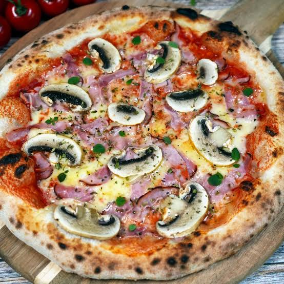

Home
Homemade Pizza Capricciosa
Description
Pizza is arguably the most popular comfort food on the planet, and making it at home brings the authentic pizzeria experience right into your kitchen. This recipe features the classic Capricciosa combination, which strikes a flawless balance of savory, earthy, and tangy flavors. It starts with a simple, yeast-risen dough that bakes into a crisp yet chewy crust. Layered with rich tomato sauce, melted mozzarella, savory ham, fresh mushrooms, and a touch of oregano, this pizza is a crowd-pleaser. Baking it at the highest possible oven temperature ensures a beautifully blistered crust and perfectly melted cheese.
Ingredients
- 300g bread flour (Type 00 or all-purpose)
- 1 tsp dry yeast
- 1 tsp sugar
- 200ml warm water
- 2 tbsp olive oil
- 1 tsp salt
- 150ml tomato sauce (seasoned with salt and oregano)
- 200g shredded mozzarella cheese
- 100g cooked ham, sliced
- 100g fresh mushrooms (button mushrooms), thinly sliced
- A handful of black olives (optional)
Steps
- Prepare the dough: In a small bowl, mix warm water, yeast, and sugar, and let it sit for 5 minutes until frothy. In a large bowl, mix flour and salt. Pour in the yeast mixture and olive oil. Knead the dough on a floured surface for about 10 minutes until smooth and elastic. Place it in an oiled bowl, cover, and let it rise for 1 hour.
- Prepare the ingredients: While the dough rises, preheat your oven to its maximum temperature (usually 250°C / 480°F). Slice the mushrooms, prepare the ham, and shred the mozzarella cheese.
- Shape the pizza: Punch down the risen dough and divide it if making smaller pizzas. Stretch or roll the dough out on a piece of baking paper into a round shape, leaving the edges slightly thicker.
- Assemble and bake: Spread the tomato sauce evenly over the dough, leaving a small border around the edges. Sprinkle the mozzarella cheese, then arrange the ham and sliced mushrooms on top. Transfer the pizza (with the baking paper) onto a hot baking tray or pizza stone. Bake for 10–12 minutes until the crust is golden brown and the cheese is bubbling. Top with olives and extra oregano before serving.
